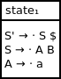
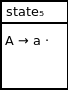
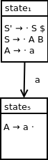
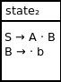
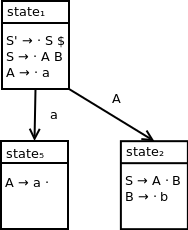
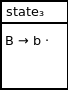
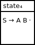

RIPAL: Responsive and Intuitive Parsing for the Analysis of Language
Pages
LR(0) multi-nonterminal production state machine
Background
In a previous section, we illustrated the method for building the LR(0) state machine for a grammar producing a nonterminal symbol in one of its productions.
In this section, we will expand this construction to illustrate the process for constructing an LR(0) state machine for a grammar producing multiple nonterminal symbols in a single production.
Our grammar
The language we will be analyzing is specified by the following grammar:
S → A B
A → a
B → b
This grammar has the following augmented grammar:
S' → S $
S → A B
A → a
B → b
Our parse table
This grammar has the following LR(0) parse table:
a
b
$
S
A
B
S'
state1
shift5
goto6
goto2
state2
shift3
goto4
state3
reduce4
reduce4
reduce4
state4
reduce2
reduce2
reduce2
state5
reduce3
reduce3
reduce3
state6
accept
Parsing input string ab:
Input queue
Parse stack
Action
ab
1
Apply action of shift5, which corresponds to state1 and a in our parse table
b
1 a 5
Apply action of reduce3, which corresponds to state5 and b in our parse table
b
1 A
Apply action of goto2, which corresponds to state1 and A in our parse table
b
1 A 2
Apply action of shift3, which corresponds to state2 and b in our parse table
1 A 2 b 3
Apply action of reduce4, which corresponds to state3 and $ in our parse table
1 A 2 B
Apply action of goto4, which corresponds to state2 and B in our parse table
1 A 2 B 4
Apply action of reduce2, which corresponds to state4 and $ in our parse table
1 S
Apply action of goto6, which corresponds to state1 and S in our parse table
1 S 6
Accept, since this action corresponds to state6 and $ in our parse table
Initial state
As per our standard process, we will construct our initial qualified production rule.
Our initial set of qualified productions is:
{S' → · S $}
Calculating the closure set, we end up with:
{S' → · S $, S → · A B, A → · a}
This is as far as we can go, since we would need to process nonterminal A or terminal a to proceed further.
As a result, our initial parse state is:

Handling terminal a
Observe the following sequence of parse stack states encountered in the parsing example above:
1
1 a 5
1 A
Here, we first shift a onto our parse stack and move into state5. Here, state5 represent being at the point in our parsing procedure where the application of a reduction corresponding to the production A → a can take place.
In applying this reduction, we are able to return to our initial parse state and continue the standard chaining process.
To calculate the closure for state5, we take the following qualified production:
A → · a
We shift the dot past the terminal a that we are processing and create the following qualified production set from this action:
{A → a ·}
Since the dot is at the end of the production, this closure can't be further expanded. We end up with state5 being defined as follows:

Finally, we connect state1 and state5 with the appropriate transition as follows:

Handling terminal b
Observe the following sequence of parse stack states encountered in the parsing example above:
1 A
1 A 2
1 A 2 b 3
1 A 2 B
After reducing terminal a to nonterminal A, we want to further make a reduction via the rule S → A B. However, we need to first get nonterminal B onto our parse stack to use this rule.
First, we use the goto2 action to transition into a state where we are ready to process more input symbols.
We shift terminal b onto the parse stack and transition into state3, in preparation for applying a reduction via the rule B → b. Then we can apply our reduction as shown in the last stack state listed above.
To calculate the closure for state2, we take the following qualified production:
S → · A B
We shift the dot past the nonterminal A that we are processing and create the following qualified production set from this action:
{S → A · B}
Expanding via our closure calculation, we end up with a closure of:
{S → A · B, B → · b}
We end up with state2 being defined as follows:

Finally, we connect state1 and state2 with the appropriate transition as follows:

Next, we create state3 by taking qualified production:
B → · b
We shift the dot past the terminal b that we are processing and create the following qualified production set from this action:
{B → b ·}
Since the dot is as the end of the production, this closure can't be further expanded. We end up with state3 being defined as follows:

Finally, we connect state2 and state3 with the appropriate transition as follows:
Handling nonterminal S
Observe the following sequence of parse stack states encountered in the parsing example above:
1 A 2 B
1 A 2 B 4
1 S
After reducing terminal b to nonterminal B, we arrive back in state2.
From here, we use our standard goto action corresponding to nonterminal processing and transition into state4.
To calculate the closure for state4, we start with the qualified production:
S → A · B
We shift the dot past the nonterminal B that we are processing and create the following qualified production set from this action:
{S → A B ·}
Since the dot is at the end of the production, this closure can't be further expanded. We end up with state4 being defined as follows:

Finally, we connect state2 and state4 with the appropriate transition as follows:
At this point, we are able to reduce nonterminals A and B to nonterminal S via the production S → A B, discarding the state information attached to those nonterminals.
Handling end of string
After reducing A B to S, from state1, we want to process the end of string according to our standard approach.
Extending our DFA, we end up with a final diagram of:
Conclusion
We've seen the LR(0) DFA construction process for a grammar containing a multi-nonterminal production.
In the next section, we will start to explore the process of converting an LR(0) DFA into a parse table.
![DFA containing four states. State 1 contains the following productions: S prime produces dot S dollar, S produces dot A B, A produces dot a. State 5 contains the following production: A produces a dot. State 1 transitions to state 5 on terminal symbol a. State 2 contains the following productions: S produces A dot B, B produces dot b. State 1 transitions to state 2 on nonterminal symbol A. State 3 contains the following production: B produces b dot. State 2 transitions to state 3 on terminal symbol b.](assets/multinonterminalproductiondfa4parsestates.png)
![DFA containing five states. State 1 contains the following productions: S prime produces dot S dollar, S produces dot A B, A produces dot a. State 5 contains the following production: A produces a dot. State 1 transitions to state 5 on terminal symbol a. State 2 contains the following productions: S produces A dot B, B produces dot b. State 1 transitions to state 2 on nonterminal symbol A. State 3 contains the following production: B produces b dot. State 2 transitions to state 3 on terminal symbol b. State 4 contains the following production: S produces A B dot. State 2 transitions to state 4 on nonterminal symbol B.](assets/multinonterminalproductiondfa5parsestates.png)
![DFA containing seven states. State 1 contains the following productions: S prime produces dot S dollar, S produces dot A B, A produces dot a. State 5 contains the following production: A produces a dot. State 1 transitions to state 5 on terminal symbol a. State 2 contains the following productions: S produces A dot B, B produces dot b. State 1 transitions to state 2 on nonterminal symbol A. State 3 contains the following production: B produces b dot. State 2 transitions to state 3 on terminal symbol b. State 4 contains the following production: S produces A B dot. State 2 transitions to state 4 on nonterminal symbol B. State 6 contains the following production: S prime produces S dot $. State 1 transitions to state 6 on nonterminal symbol S. State 7 contains the following production: S prime produces S $ dot. State 6 transitions to state 7 on end of string symbol $. State 7 is an accepting state.](assets/multinonterminalproductiondfa7parsestates.png)